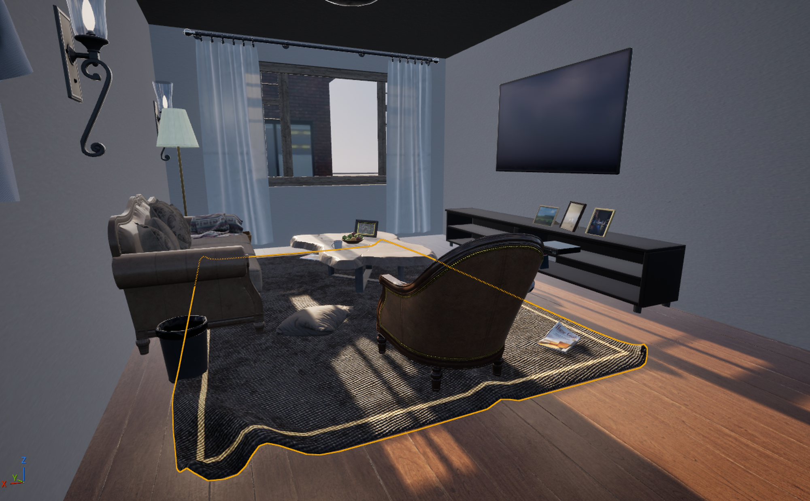
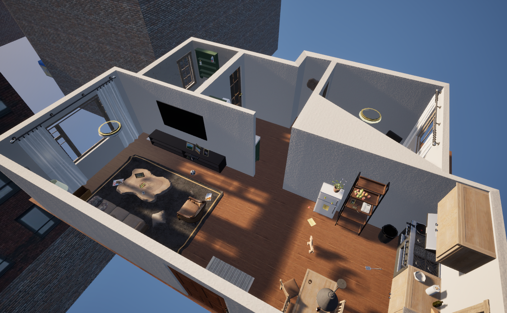
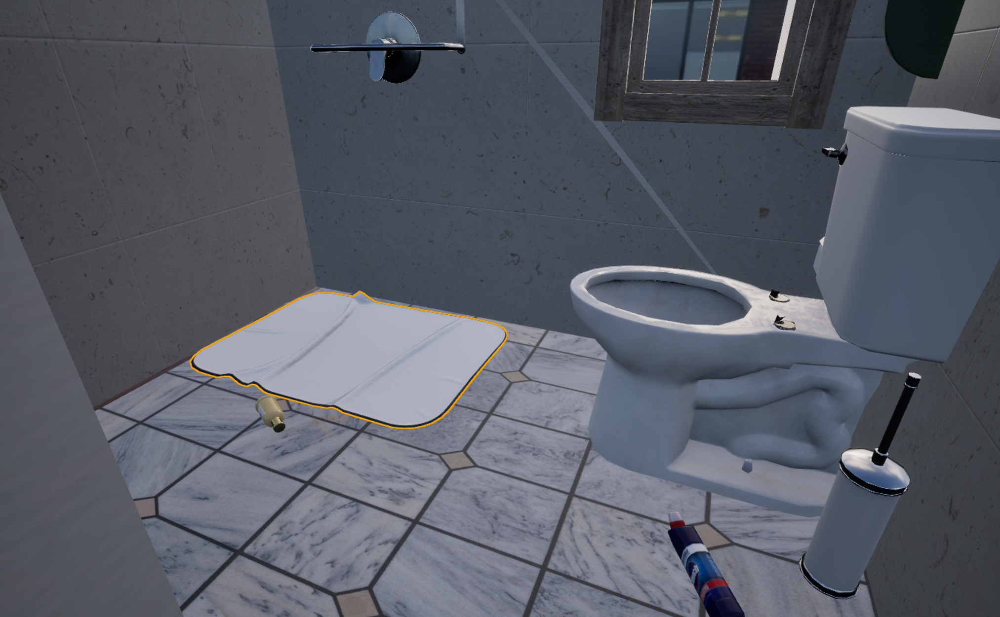
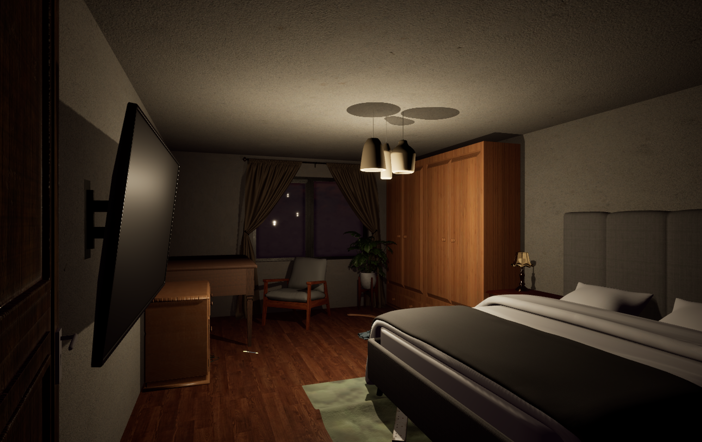
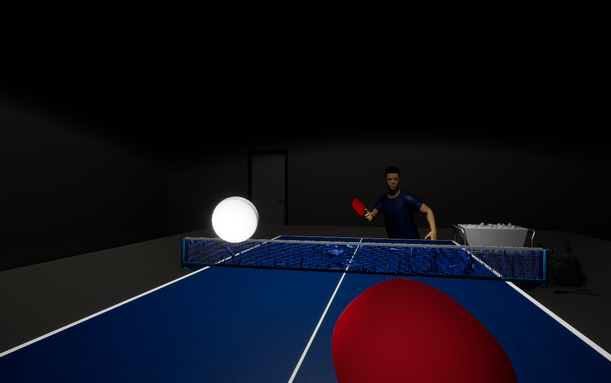
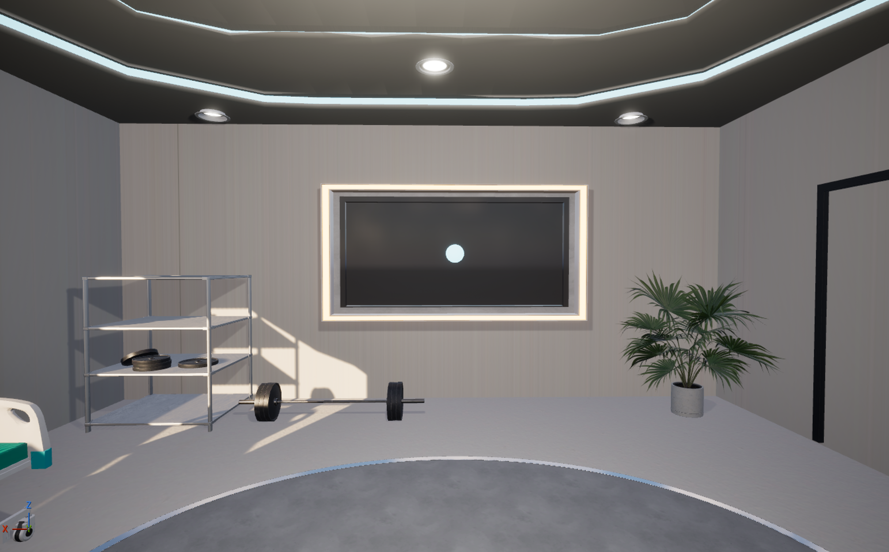

02 · Environment
Training starts in familiar spaces.
The system uses kitchens, bathrooms, bedrooms, living rooms, and related daily environments rather than abstract visual-search tasks.

Gaze-Mediated Virtual Reality Training for Visual Attention and Gaze Stability in Older Adults.
LumaStep started from a simple observation: avoiding a fall depends not only on balance and gait, but also on noticing hazards, directing attention efficiently, and keeping vision stable while the head moves. I therefore built two training modules—environmental hazard search and gaze stabilization—and used eye tracking directly in the interaction.



The system uses kitchens, bathrooms, bedrooms, living rooms, and related daily environments rather than abstract visual-search tasks.
Users inspect a scene and confirm a potential hazard through gaze. Dwell-based confirmation requires sustained attention rather than a quick pointer click.
The task is instructional rather than purely score-based. Feedback identifies why an object may or may not contribute to fall risk and guides the user back into the search process.
Different room layouts and day/night conditions increase visual-search demand without forcing users to learn a new control scheme.
Hazard search trains where attention goes in a scene; gaze stabilization trains whether vision remains stable during head movement. The two modules share the same intervention goal but operate at different levels of visual behavior.
A table-tennis scenario provides a natural moving target, while a controlled fixation scene reduces environmental distraction. Together they train eye–head coordination under different levels of contextual complexity.


This web version simplifies the VR interaction: the pointer stands in for gaze and the radial timer stands in for dwell confirmation.
Study 1 asks whether eye-controlled interaction adds anything beyond the same mixed training without gaze control. Study 2 asks how the two modules should be organized: mixed together, hazard search first, or gaze stabilization first.
Eye-controlled training showed greater improvement than the non-eye-controlled comparison on balance and fear-of-falling outcomes.
Repeated-measures results indicated that the timing and ordering of the two modules influenced the trajectory of improvement.
Interview data suggested a shift from relatively unsystematic scanning toward more goal-directed and spatially organized search strategies.